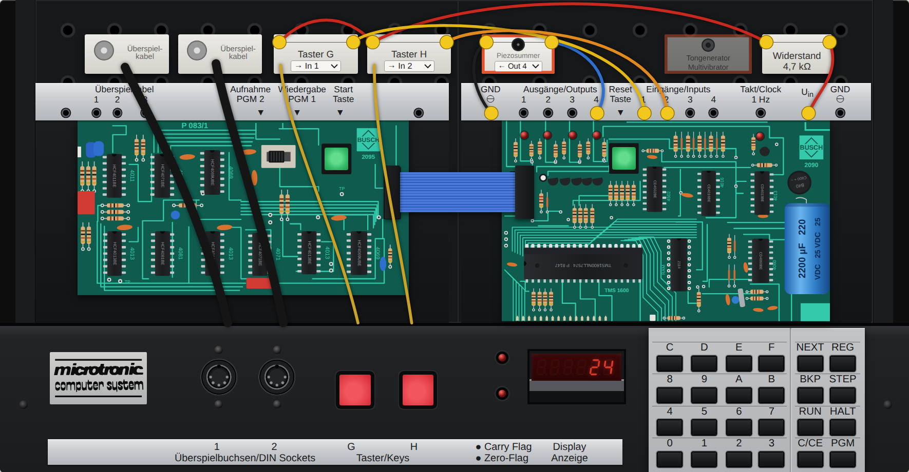
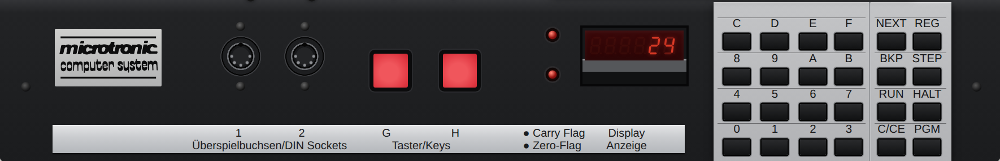
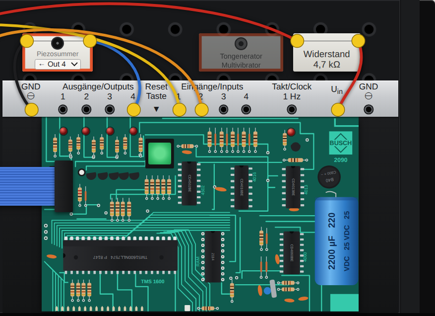

Busch Microtronic 2090 — a programmer's guide
How to operate and program the 1981 Busch Microtronic 2090, written for the browser emulator, which runs the machine's original firmware. Everything described here was tried on that firmware. This is an independent guide in its own words. The original manuals, with many more programs and experiments, are available in English translation.
1. The machine
The Microtronic is a 4-bit teaching computer. Inside, a TMS1600 microcontroller runs a fixed program, the firmware, which makes the box behave like a simple imaginary computer with its own instruction set. That imaginary computer is what you program. Everything in it is a single hexadecimal digit, 0 to F: one nibble, four bits.

- Program memory. 256 places, addresses 00 to FF. Each holds one instruction of three hex digits, such as
510. - Sixteen working registers, 0 to F. Each holds one hex digit. This is where a program keeps its numbers; there is no other data memory.
- Sixteen memory registers, a second bank of the same size. A program cannot work on them directly, only copy to them and swap them with the working registers.
- Two flags, carry and zero, each with an LED. Instructions set them as a side effect, and two jump instructions test them.
- A six-digit display, which shows registers, never memory, while a program runs.
- Four outputs and four inputs, a 1 Hz clock signal, and two red push buttons, G and H, that can be wired to inputs.
Programs cannot change the program memory, and data cannot be executed: instructions and numbers live in separate worlds.
2. Operating it
When the machine is not running a program, the display shows an address at the left and the instruction stored there at the right: 00 F10 means address 00 holds F10.

| Keys | What happens |
|---|---|
| HALT NEXT then two hex digits | Go to that address. HALT NEXT 0 0 goes to the start. |
| three hex digits, NEXT | Stores the instruction at the address shown and moves to the next address. |
| NEXT alone | Moves to the next address without changing anything: use it to read a program back. |
| C/CE | Deletes the last digit you typed. NEXT only stores once three digits are there. |
| RUN | Runs the program from the address shown. |
| HALT | Stops a running program. RUN then continues from where it stopped. |
| STEP | Carries out one instruction and stops. |
| REG then a hex digit | Shows that working register, e.g. 1 9: register 1 holds 9. A further hex digit changes its value. HALT returns. |
| BKP then two hex digits | Sets a breakpoint: a running program stops when it reaches that address. BKP 0 0 removes it. |
| PGM then a digit | Calls a built-in function; see section 11. |
| the green reset key | Restarts the firmware. The program stays in memory; the registers and the clock are cleared. |
In the emulator you can skip the typing: pick a program and press Load & run, or click a line in the Inside panel and edit it.
The whole keypad is also on the PC keyboard: H HALT, N NEXT, R RUN and so on, so H N 0 0 R starts a program.
3. The instructions
An instruction is three hex digits. The first says what to do; the other two say with what. In the table, s and d are register numbers (source and destination), n is a constant 0–F, and aa is a two-digit address.
| Code | Name | What it does |
|---|---|---|
| 0sd | MOV s,d | Copy register s to register d. |
| 1nd | MOVI n,d | Put the constant n into register d. |
| 2sd | AND s,d | d := d AND s, bit by bit. |
| 3nd | ANDI n,d | d := d AND n. |
| 4sd | ADD s,d | d := d + s. |
| 5nd | ADDI n,d | d := d + n. |
| 6sd | SUB s,d | d := d − s. |
| 7nd | SUBI n,d | d := d − n. |
| 8sd | CMP s,d | Compare register s with register d; only the flags change. |
| 9nd | CMPI n,d | Compare the constant n with register d; only the flags change. |
| Asd | OR s,d | d := d OR s, bit by bit. |
| Baa | CALL aa | Jump to the subroutine at aa, remembering where to come back to. |
| Caa | GOTO aa | Jump to aa. |
| Daa | BRC aa | Jump to aa if the carry flag is set. |
| Eaa | BRZ aa | Jump to aa if the zero flag is set. |
Codes beginning with F are a second family without a source register:
| Code | Name | What it does |
|---|---|---|
| F00 | HALT | Stop the program. |
| F01 | NOP | Do nothing. |
| F02 | DISOUT | Switch the display off. |
| F03 | HXDZ | Convert the hex number in registers D, E, F to decimal digits (section 7). |
| F04 | DZHX | The reverse: decimal digits in D, E, F to a hex number. |
| F05 | RND | Put random digits into registers D, E, F. |
| F06 | TIME | Copy the clock into registers A to F. |
| F07 | RET | Return from a subroutine. |
| F08 | CLEAR | Set all working registers to 0. |
| F09 | STC | Set the carry flag. |
| F0A | RSC | Clear the carry flag. |
| F0B | MULT | Decimal multiplication (section 7). |
| F0C | DIV | Decimal division. |
| F0D | EXRL | Swap working registers 0–7 with memory registers 0–7. |
| F0E | EXRM | Swap working registers 8–F with memory registers 8–F. |
| F0F | EXRA | Swap all sixteen. |
| Fnd | DISP n,d | For n = 1 to 6: show n registers on the display, starting with register d at the right. |
| F7d | MAS d | Copy working register d to memory register d. |
| F8d | INV d | Invert all four bits of register d. |
| F9d | SHR d | Shift register d one bit to the right; the bit pushed out goes to the carry flag. |
| FAd | SHL d | Shift register d one bit to the left; the bit pushed out goes to the carry flag. |
| FBd | ADC d | Add the carry flag to register d. |
| FCd | SUBC d | Subtract the carry flag from register d. |
| FDd | DIN d | Read the four inputs into register d. |
| FEd | DOT d | Put register d on the four outputs. |
| FFd | KIN d | Wait for a hex key and put it into register d. |
4. First programs
The programs below are in the emulator's library under "Examples from the guide". They are written as address, code and name.
Show a number
00 150 MOVI 5,0 register 0 := 5 01 F10 DISP 1,0 show one register, register 0 02 C02 GOTO 02 stay here
The display shows 5 in its right-hand digit. Nothing appears until a program says what to show: DISP is a switch that stays set, so one DISP at the start is enough, and the display then follows the registers by itself. The last line is a loop on the spot. If a program ends with HALT instead, the display goes back to showing address and instruction, and you would look at the result with REG. Try it
A counter
00 F10 DISP 1,0 01 FE0 DOT 0 register 0 to the four output LEDs 02 B08 CALL 08 wait a moment (subroutine) 03 510 ADDI 1,0 register 0 := register 0 + 1 04 C01 GOTO 01
Register 0 counts 0, 1, 2 … 9, A, B … F and then starts again at 0, because a register only has four bits. The output LEDs show the same value in binary: output 1 counts 1, output 2 counts 2, output 3 counts 4, output 4 counts 8. The wait is explained in section 8. Try it
Reading the keyboard
00 F10 DISP 1,0 01 FF0 KIN 0 wait for a key, put it in register 0 02 FE0 DOT 0 03 C01 GOTO 01
KIN stops the program until a hex key is pressed. Try it
5. Carry, zero and decisions
The only way a program can decide anything is by the two flags. Their LEDs sit next to the display, so you can watch them.
| After… | Carry is set when… | Zero is set when… |
|---|---|---|
| ADD, ADDI, ADC | the sum went past F | the result is 0 |
| SUB, SUBI, SUBC | the result went below 0 (a borrow) | the result is 0 |
| CMP s,d | register s is smaller than register d | they are equal |
| CMPI n,d | register d is greater than n | register d equals n |
| SHR, SHL | the bit shifted out was 1 | the result is 0 |
| AND, ANDI, OR, INV | (always cleared) | the result is 0 |
| MOV, MOVI | (left as it was) | the value is 0 |
A result that goes past F simply wraps round: 9 + 9 leaves 2 with carry set (18 = 16 + 2), and 3 − 5 leaves E with carry set.
A decimal counter
00 F20 DISP 2,0 show registers 1 and 0 as tens and units 01 B10 CALL 10 wait 02 510 ADDI 1,0 units + 1 03 9A0 CMPI A,0 have the units reached ten? 04 E06 BRZ 06 yes: carry over 05 C01 GOTO 01 06 100 MOVI 0,0 units := 0 07 511 ADDI 1,1 tens + 1 08 9A1 CMPI A,1 have the tens reached ten? 09 E0B BRZ 0B 0A C01 GOTO 01 0B 101 MOVI 0,1 tens := 0 0C C01 GOTO 01
A register happily counts to F, so a decimal counter has to notice the ten itself and carry over by hand. Compare, then branch on the flag: that pair is the pattern behind every decision. Note that DISP 2,0 puts register 0 at the right and register 1 to its left. Try it
Dice
00 F1D DISP 1,D 01 FF0 KIN 0 wait for any key 02 F05 RND random digits into D, E, F 03 95D CMPI 5,D is D greater than 5? 04 D02 BRC 02 yes: try again 05 51D ADDI 1,D 0–5 becomes 1–6 06 C01 GOTO 01
Random digits come as 0 to F. Throwing away everything above 5 and adding one gives a fair die. The randomness comes from how long you take to press the key. Try it
6. Inputs and outputs

DOT d puts the four bits of register d on outputs 1 to 4; an LED lights for each 1. DIN d reads inputs 1 to 4 into register d. An input with nothing connected reads 0; connecting it to a positive voltage makes it 1.
00 F10 DISP 1,0 01 FD0 DIN 0 inputs to register 0 02 FE0 DOT 0 register 0 to outputs 03 C01 GOTO 01
In the emulator there are three ways to feed an input: click an input jack to plug in a high level; hold the red keys G and H, which are wired to inputs of your choice; or run a patch cable from an output or from the 1 Hz clock. Try it
To test one input, mask the others away: FD0 then 310 (ANDI 1,0) leaves only input 1, and the zero flag tells you whether it is off.
The clock
The firmware keeps a clock, but it only counts if the 1 Hz output is connected to input 4. TIME copies it into registers A to F: seconds in A and B, minutes in C and D, hours in E and F.
00 F6A DISP 6,A show registers F…A 01 F06 TIME 02 C01 GOTO 01
The clock starts at 00 00 00 when the machine is switched on; set it with PGM 3. Try it
7. Decimal numbers and arithmetic
One register is one digit, so a longer number is spread over several registers, lowest digit in the lowest register. DISP shows them the right way round.
Hex to decimal
HXDZ takes the hex number in registers F, E, D (D is the lowest digit) and replaces it with its decimal digits. FF becomes 2, 5, 5. A number above 999 does not fit: the registers become 0 and the zero flag is set. DZHX goes the other way.
00 F08 CLEAR 01 F2D DISP 2,D 02 FF0 KIN 0 first key 03 FFD KIN D second key 04 10E MOVI 0,E 05 10F MOVI 0,F 06 40D ADD 0,D D := D + register 0 07 FBE ADC E a carry goes into the next digit 08 F03 HXDZ hex to decimal 09 F2D DISP 2,D 0A C02 GOTO 02
Press 9 and 8 and the display shows 17; F and F give 30. The ADC is how numbers longer than one digit are added: add the low digits, then add the carry into the next one. Try it
MULT and DIV
Both work on decimal numbers of up to six digits, one in working registers 0–5 and the other in memory registers 0–5, and leave the result in the working registers.
- MULT: working := working × memory.
- DIV: the number in the memory registers is divided by the number in the working registers. The quotient lands in the working registers, the remainder in the memory registers. The zero flag is set when there is a remainder. DIV handles up to four digits; dividing by zero fills the registers with E and sets carry.
00 F08 CLEAR 01 170 MOVI 7,0 02 F70 MAS 0 memory register 0 := 7 03 180 MOVI 8,0 working register 0 := 8 04 F0B MULT 05 F20 DISP 2,0 shows 56 06 C06 GOTO 06
Both are done by the firmware through repeated adding and subtracting, so large numbers take noticeably long. Note that CLEAR clears only the working registers. Try it
8. Subroutines and delays
CALL aa jumps to a piece of program and RET comes back to the instruction after the CALL. Only one return address is remembered, so a subroutine cannot call another subroutine. The emulator's Inside panel shows the address RET would return to.
The Microtronic runs about 60 instructions a second, and there is no wait instruction. A pause is a counting loop:
08 18F MOVI 8,F start value 09 51F ADDI 1,F count up 0A D0C BRC 0C past F: done 0B C09 GOTO 09 0C F07 RET
Each round takes three instructions. Starting at 8 gives 8 rounds, about 0.4 seconds; starting at 0 gives 16 rounds, about 0.8 seconds. For longer pauses, nest two such loops. Because the machine is this slow, it pays to count instructions in anything that should feel responsive.
9. Sound
The Microtronic has no sound of its own. The emulator offers the three add-ons that were used with it:
- The piezo buzzer, connected to an output of your choice. It sounds as long as that output is on. A beep is DOT, a pause, DOT with 0.
- The tone circuit, a small two-transistor oscillator connected to all four outputs. The value on the outputs sets the pitch: 4 to F give twelve tones, 0 to 3 give silence. With it, DOT plays a note. The emulator's pitches are tuned so that 4, 6, 8, A and C sound c, d, e, f and g. Try the twelve tones
- PicoRAM 2090 notes. The modern PicoRAM memory expansion plays notes on the instruction
50D, followed by octave and note. See the "Sound" programs in the library.
The Sound off button silences whatever is sounding.
10. Finding mistakes
- Read it back. HALT NEXT 0 0 and then NEXT repeatedly shows each address with its instruction.
- Single-step. STEP carries out one instruction at a time; the display shows where you are.
- Look at registers. REG and a register number, at any stop. You can also change the value there.
- Breakpoint. BKP and an address lets the program run at full speed up to that point.
- In the emulator, the Inside panel shows all of this at once while the program runs: the current address, both register banks, the flags, inputs and outputs.
Two classic mistakes: confusing MOV (copy a register) with MOVI (put in a constant), and forgetting that SUB and CMP take their operands in the order shown in the tables above.
11. Built-in functions
HALT PGM and a digit calls a function that is part of the firmware:
| PGM | Function |
|---|---|
| 0 | Self-test of display, keys and ports. |
| 1, 2 | Load from and save to cassette. Not available in the emulator (they wait for the cassette interface; press reset). |
| 3 | Set the clock: type hours and minutes, then HALT. |
| 4 | Show the clock. |
| 5 | Clear the program memory (every address becomes 000). |
| 6 | Fill the program memory with NOP (F01). |
| 7 | Load the built-in game Nim into memory; start it with HALT NEXT 0 0 RUN. |
12. About the emulator
The emulator runs the Microtronic's original TMS1600 firmware, with the program memory chip, the display, the keypad and the ports modelled around it at the level of the individual pins. What it adds for convenience:
- Programs: a library, loading and saving
.MICfiles, and Load & run. Loading a library program also wires up what it needs. - Inside: address, flags, both register banks, inputs, outputs, the return address, and the whole program with instruction names; click a line to change it.
- Speed: from a quarter of the original to a hundred times faster.
- Wiring: the red keys, the piezo buzzer, the tone circuit, the clock cable and an output-to-input cable.
A .MIC file is plain text with one three-digit instruction per line; @ 20 continues at address 20, and text after # is a comment.
Quick reference
| Code | Name | Code | Name | Code | Name | Code | Name |
|---|---|---|---|---|---|---|---|
| 0sd | MOV | 8sd | CMP | F00 | HALT | F08 | CLEAR |
| 1nd | MOVI | 9nd | CMPI | F01 | NOP | F09 | STC |
| 2sd | AND | Asd | OR | F02 | DISOUT | F0A | RSC |
| 3nd | ANDI | Baa | CALL | F03 | HXDZ | F0B | MULT |
| 4sd | ADD | Caa | GOTO | F04 | DZHX | F0C | DIV |
| 5nd | ADDI | Daa | BRC | F05 | RND | F0D | EXRL |
| 6sd | SUB | Eaa | BRZ | F06 | TIME | F0E | EXRM |
| 7nd | SUBI | Fnd | DISP (n = 1–6) | F07 | RET | F0F | EXRA |
| F7d | MAS | F8d | INV | F9d | SHR | FAd | SHL |
| FBd | ADC | FCd | SUBC | FDd | DIN | FEd | DOT |
| FFd | KIN | ||||||
Keys: HALT NEXT address · three digits NEXT stores · RUN · HALT · STEP · REG register · BKP address · PGM digit · C/CE deletes a digit.
Written with Claude Opus 5.5 (Claude Code) for the Microtronic emulator by Michael Wessel. The Microtronic and its firmware are © Busch GmbH. This guide is an independent description; for the original manuals see the English translation.